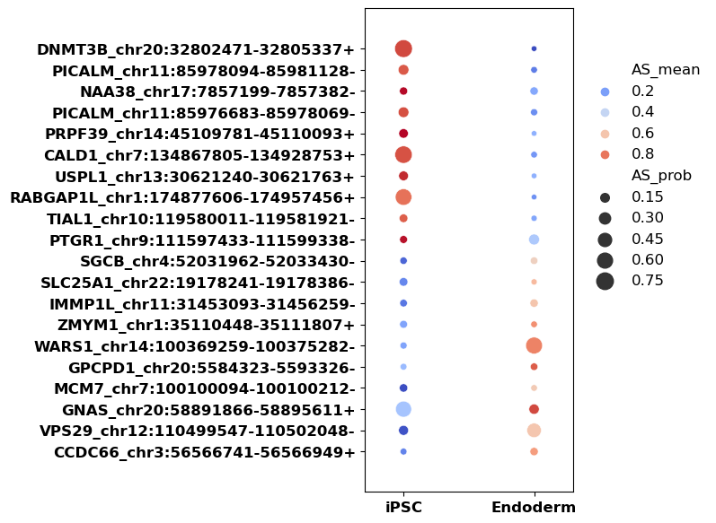
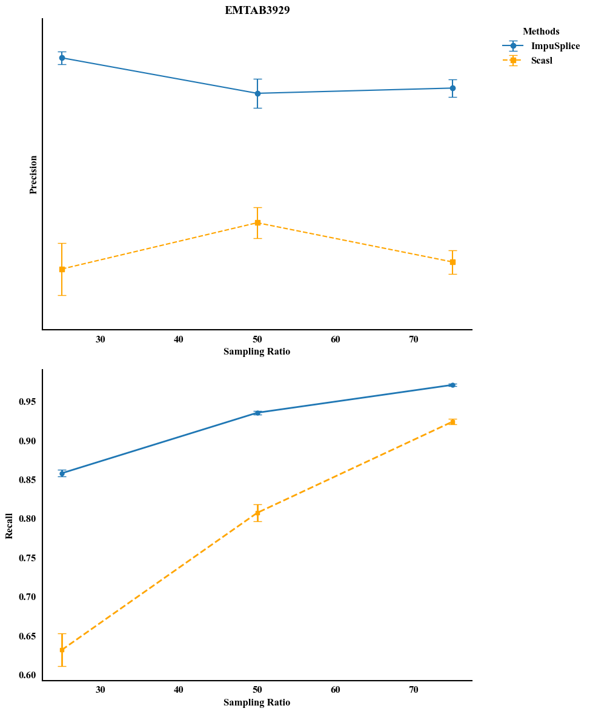

Tutorial 1: 一致性测试
[ ]:
import numpy as np
import seaborn as sns
import matplotlib.pyplot as plt
from scipy.stats import ks_2samp
# 示例二维矩阵
original_matrix = np.array([
[0.1, 0.2, np.nan, 0.4],
[0.5, np.nan, 0.7, 0.8],
[np.nan, 0.6, 0.4, np.nan]
])
filled_matrix = np.array([
[0.1, 0.2, 0.3, 0.4],
[0.5, 0.6, 0.7, 0.8],
[0.5, 0.6, 0.4, 0.5]
])
# 提取全局非缺失值和填充值
original_values = original_matrix[~np.isnan(original_matrix)]
filled_values = filled_matrix[np.isnan(original_matrix)]
# 全局分布可视化
sns.kdeplot(original_values, label='Original Non-Missing', color='blue')
sns.kdeplot(filled_values, label='Filled Missing', color='orange')
plt.title("Global Distribution Comparison")
plt.legend()
plt.show()
# KS检验
ks_stat, p_value = ks_2samp(original_values, filled_values)
print(f"Global KS Statistic={ks_stat}, P-value={p_value}")
利用两套数据集进行一致性测试
ipsc分化为内胚层数据集和ipsc分化为两种细胞类型的数据集
[1]:
# ipsc分化成内胚层数据集
# 读取未填充的数据集
import pandas as pd
original_ipsc = pd.read_csv("./onlyfill_NA_SJ_counts.csv")
original_ipsc
[1]:
| ERR1562084 | ERR1562085 | ERR1562086 | ERR1562087 | ERR1562088 | ERR1562091 | ERR1562092 | ERR1562093 | ERR1562094 | ERR1562095 | ... | ERR1562266 | ERR1562267 | ERR1562269 | ERR1562270 | ERR1562271 | ERR1562272 | ERR1562273 | annotated | coord.intron | intron_group | |
|---|---|---|---|---|---|---|---|---|---|---|---|---|---|---|---|---|---|---|---|---|---|
| 0 | NaN | NaN | NaN | NaN | NaN | 5.0 | NaN | NaN | NaN | NaN | ... | NaN | NaN | NaN | NaN | NaN | NaN | NaN | 1 | AAGAB_chr15:67236821-67254413- | AAGAB_chr15_67236821_- |
| 1 | 25.0 | NaN | NaN | NaN | 21.0 | 70.0 | NaN | NaN | NaN | NaN | ... | NaN | 201.0 | 21.0 | NaN | 63.0 | NaN | 26.0 | 1 | AAGAB_chr15:67236821-67254558- | AAGAB_chr15_67236821_- |
| 2 | NaN | NaN | NaN | NaN | NaN | NaN | NaN | NaN | NaN | NaN | ... | 31.0 | NaN | NaN | NaN | NaN | NaN | NaN | 1 | AAMDC_chr11:77821242-77842478+ | AAMDC_chr11_77842478_+ |
| 3 | NaN | NaN | NaN | NaN | NaN | NaN | NaN | NaN | NaN | NaN | ... | NaN | NaN | NaN | NaN | NaN | NaN | 21.0 | 1 | AAMDC_chr11:77841061-77842478+ | AAMDC_chr11_77842478_+ |
| 4 | NaN | NaN | 53.0 | NaN | 25.0 | NaN | 34.0 | 18.0 | 21.0 | 31.0 | ... | NaN | 79.0 | NaN | NaN | NaN | NaN | NaN | 1 | AASS_chr7:122078015-122078861- | AASS_chr7_122078015_- |
| ... | ... | ... | ... | ... | ... | ... | ... | ... | ... | ... | ... | ... | ... | ... | ... | ... | ... | ... | ... | ... | ... |
| 11680 | NaN | NaN | NaN | NaN | NaN | NaN | NaN | NaN | NaN | NaN | ... | NaN | NaN | NaN | NaN | NaN | NaN | NaN | 1 | ZRANB2_chr1:71065753-71066775- | ZRANB2_chr1_71066775_- |
| 11681 | NaN | NaN | NaN | NaN | NaN | NaN | NaN | NaN | NaN | 5.0 | ... | 58.0 | NaN | NaN | NaN | NaN | NaN | NaN | 1 | ZSWIM7_chr17:15977093-15978043- | ZSWIM7_chr17_15978043_- |
| 11682 | NaN | NaN | NaN | NaN | NaN | NaN | NaN | NaN | NaN | 24.0 | ... | 13.0 | NaN | 31.0 | 23.0 | NaN | NaN | 27.0 | 1 | ZSWIM7_chr17:15977914-15978043- | ZSWIM7_chr17_15978043_- |
| 11683 | NaN | NaN | NaN | NaN | NaN | NaN | NaN | NaN | NaN | NaN | ... | NaN | NaN | NaN | NaN | NaN | NaN | NaN | 1 | ZWILCH_chr15:66505392-66508745+ | ZWILCH_chr15_66505392_+ |
| 11684 | NaN | NaN | NaN | NaN | NaN | NaN | NaN | NaN | NaN | NaN | ... | NaN | NaN | NaN | NaN | NaN | NaN | NaN | 1 | ZWILCH_chr15:66505392-66508840+ | ZWILCH_chr15_66505392_+ |
11685 rows × 142 columns
[2]:
# ipsc分化成内胚层数据集
# 读取scasl填充的数据集
scasl_AS_ratio = pd.read_csv("scasl_as_rate.csv", index_col=0)
# 直接删除索引中不以 "chr" 开头的所有行
scasl_AS_ratio.drop(
index=scasl_AS_ratio.index[~scasl_AS_ratio.index.str.startswith("chr")],
inplace=True
)
scasl_AS_ratio
[2]:
| ERR1562273 | ERR1562163 | ERR1562122 | ERR1562222 | ERR1562088 | ERR1562261 | ERR1562114 | ERR1562244 | ERR1562107 | ERR1562101 | ... | ERR1562161 | ERR1562108 | ERR1562086 | ERR1562160 | ERR1562128 | ERR1562121 | ERR1562227 | ERR1562092 | ERR1562091 | ERR1562162 | |
|---|---|---|---|---|---|---|---|---|---|---|---|---|---|---|---|---|---|---|---|---|---|
| Site | |||||||||||||||||||||
| chr10_100352497_100352621 | 0.000000 | 0.000000 | 0.000000 | 0.000000 | 0.000000 | 0.000000 | 0.000000 | 0.000000 | 0.000000 | 0.000000 | ... | 0.000000 | 0.059829 | 0.028037 | 0.000000 | 0.000000 | 0.000000 | 0.000000 | 0.000000 | 0.048780 | 0.000000 |
| chr10_100352497_100354426 | 1.000000 | 1.000000 | 1.000000 | 1.000000 | 1.000000 | 1.000000 | 1.000000 | 1.000000 | 1.000000 | 1.000000 | ... | 1.000000 | 0.940171 | 0.971963 | 1.000000 | 1.000000 | 1.000000 | 1.000000 | 1.000000 | 0.951220 | 1.000000 |
| chr10_100354633_100356531 | 1.000000 | 1.000000 | 1.000000 | 1.000000 | 1.000000 | 1.000000 | 1.000000 | 1.000000 | 1.000000 | 0.966049 | ... | 1.000000 | 1.000000 | 1.000000 | 1.000000 | 1.000000 | 1.000000 | 1.000000 | 1.000000 | 1.000000 | 1.000000 |
| chr10_100354633_100360733 | 0.000000 | 0.000000 | 0.000000 | 0.000000 | 0.000000 | 0.000000 | 0.000000 | 0.000000 | 0.000000 | 0.033951 | ... | 0.000000 | 0.000000 | 0.000000 | 0.000000 | 0.000000 | 0.000000 | 0.000000 | 0.000000 | 0.000000 | 0.000000 |
| chr10_100374013_100380982 | 0.151692 | 0.000000 | 0.151692 | 0.000000 | 0.151700 | 0.151701 | 0.151685 | 0.151700 | 0.560976 | 0.100000 | ... | 0.151706 | 0.151706 | 0.151700 | 0.151693 | 0.151699 | 0.151693 | 0.151700 | 0.151689 | 0.000000 | 0.151688 |
| ... | ... | ... | ... | ... | ... | ... | ... | ... | ... | ... | ... | ... | ... | ... | ... | ... | ... | ... | ... | ... | ... |
| chrX_97310659_97348080 | 0.820375 | 0.821367 | 0.824438 | 0.786939 | 0.818156 | 0.826912 | 0.534884 | 0.823043 | 0.820216 | 0.652174 | ... | 0.825669 | 1.000000 | 0.482759 | 0.237288 | 0.415730 | 1.000000 | 0.823692 | 0.600000 | 1.000000 | 0.160000 |
| chrX_97315894_97348080 | 0.083093 | 0.082656 | 0.081220 | 0.098580 | 0.084137 | 0.080091 | 0.011628 | 0.081878 | 0.083188 | 0.000000 | ... | 0.080662 | 0.000000 | 0.000000 | 0.000000 | 0.584270 | 0.000000 | 0.081582 | 0.000000 | 0.000000 | 0.840000 |
| chrX_97346950_97348080 | 0.094638 | 0.094181 | 0.092514 | 0.112309 | 0.095850 | 0.091292 | 0.453488 | 0.093315 | 0.094798 | 0.347826 | ... | 0.091899 | 0.000000 | 0.517241 | 0.762712 | 0.000000 | 0.000000 | 0.092988 | 0.400000 | 0.000000 | 0.000000 |
| chrX_97310659_97383908 | 0.020120 | 0.019947 | 0.019644 | 0.000000 | 0.535714 | 0.000000 | 0.000000 | 0.019767 | 0.437500 | 0.000000 | ... | 0.019475 | 0.000000 | 0.000000 | 0.000000 | 0.017094 | 0.000000 | 0.000000 | 0.000000 | 0.181818 | 0.000000 |
| chrX_97348281_97383908 | 0.973188 | 0.973327 | 0.973792 | 1.000000 | 0.464286 | 1.000000 | 1.000000 | 0.973568 | 0.562500 | 1.000000 | ... | 0.973974 | 1.000000 | 1.000000 | 1.000000 | 0.982906 | 1.000000 | 1.000000 | 1.000000 | 0.818182 | 1.000000 |
18823 rows × 141 columns
[3]:
# 读取label文件
# label=pd.read_csv("onlyfillna_as_PRJEB15062_smart_seq2_label.csv",index_col=0)
# label
label=pd.read_csv("PRJEB15062_smart_seq2_Developmental_stage.csv",index_col=0)
label
[3]:
| type | |
|---|---|
| Run | |
| ERR1562084 | iPSC |
| ERR1562085 | iPSC |
| ERR1562086 | iPSC |
| ERR1562087 | iPSC |
| ERR1562088 | iPSC |
| ... | ... |
| ERR1562269 | Endoderm |
| ERR1562270 | Endoderm |
| ERR1562271 | Endoderm |
| ERR1562272 | Endoderm |
| ERR1562273 | Endoderm |
141 rows × 1 columns
[4]:
# 读取填充的as ratio矩阵
AS_martix=pd.read_csv("as_rate_fillna.csv",sep='\t',index_col='coord.intron')
AS_martix
[4]:
| intron_group | annotated | ERR1562084 | ERR1562085 | ERR1562086 | ERR1562087 | ERR1562088 | ERR1562091 | ERR1562092 | ERR1562093 | ... | ERR1562259 | ERR1562260 | ERR1562261 | ERR1562266 | ERR1562267 | ERR1562269 | ERR1562270 | ERR1562271 | ERR1562272 | ERR1562273 | |
|---|---|---|---|---|---|---|---|---|---|---|---|---|---|---|---|---|---|---|---|---|---|
| coord.intron | |||||||||||||||||||||
| AAGAB_chr15:67236821-67254413- | AAGAB_chr15_67236821_- | 1 | 0.931602 | 0.867055 | 0.869474 | 0.847394 | 0.851158 | 0.066667 | 0.861904 | 0.872349 | ... | 0.946896 | 0.815783 | 0.815783 | 0.815783 | 0.826566 | 0.954825 | 0.815783 | 0.865605 | 0.815783 | 0.947835 |
| AAGAB_chr15:67236821-67254558- | AAGAB_chr15_67236821_- | 1 | 0.068398 | 0.132945 | 0.130526 | 0.152606 | 0.148842 | 0.933333 | 0.138096 | 0.127651 | ... | 0.053104 | 0.184217 | 0.184217 | 0.184217 | 0.173434 | 0.045175 | 0.184217 | 0.134395 | 0.184217 | 0.052165 |
| AAMDC_chr11:77821242-77842478+ | AAMDC_chr11_77842478_+ | 1 | 0.366686 | 0.347646 | 0.359134 | 0.351054 | 0.366686 | 0.359134 | 0.366686 | 0.337902 | ... | 0.376126 | 0.376126 | 0.376126 | 0.119816 | 0.376126 | 0.376126 | 0.376126 | 0.380772 | 0.376126 | 0.852471 |
| AAMDC_chr11:77841061-77842478+ | AAMDC_chr11_77842478_+ | 1 | 0.633314 | 0.652354 | 0.640866 | 0.648946 | 0.633314 | 0.640866 | 0.633314 | 0.662098 | ... | 0.623874 | 0.623874 | 0.623874 | 0.880184 | 0.623874 | 0.623874 | 0.623874 | 0.619228 | 0.623874 | 0.147529 |
| AASS_chr7:122078015-122078861- | AASS_chr7_122078015_- | 1 | 0.470918 | 0.460222 | 0.566012 | 0.518276 | 0.406448 | 0.470918 | 0.971429 | 0.818182 | ... | 0.521722 | 0.521722 | 0.521722 | 0.521722 | 0.181726 | 0.521722 | 0.521722 | 0.520550 | 0.513842 | 0.521722 |
| ... | ... | ... | ... | ... | ... | ... | ... | ... | ... | ... | ... | ... | ... | ... | ... | ... | ... | ... | ... | ... | ... |
| ZRANB2_chr1:71065753-71066775- | ZRANB2_chr1_71066775_- | 1 | 0.508494 | 0.511934 | 0.513883 | 0.500460 | 0.522013 | 0.513883 | 0.522013 | 0.533265 | ... | 0.473574 | 0.473574 | 0.473574 | 0.473574 | 0.473574 | 0.473574 | 0.473574 | 0.454333 | 0.467672 | 0.473574 |
| ZSWIM7_chr17:15977093-15978043- | ZSWIM7_chr17_15978043_- | 1 | 0.508734 | 0.496765 | 0.523134 | 0.466447 | 0.523134 | 0.523134 | 0.523134 | 0.479638 | ... | 0.523429 | 0.495103 | 0.495103 | 0.816901 | 0.495103 | 0.251914 | 0.383093 | 0.503137 | 0.487987 | 0.291536 |
| ZSWIM7_chr17:15977914-15978043- | ZSWIM7_chr17_15978043_- | 1 | 0.491266 | 0.503235 | 0.476866 | 0.533553 | 0.476866 | 0.476866 | 0.476866 | 0.520362 | ... | 0.476571 | 0.504897 | 0.504897 | 0.183099 | 0.504897 | 0.748086 | 0.616907 | 0.496863 | 0.512013 | 0.708464 |
| ZWILCH_chr15:66505392-66508745+ | ZWILCH_chr15_66505392_+ | 1 | 0.555413 | 0.555413 | 0.521862 | 0.537170 | 0.555413 | 0.521862 | 0.555413 | 0.561228 | ... | 0.502351 | 0.502351 | 0.502351 | 0.502351 | 0.502351 | 0.502351 | 0.502351 | 0.517317 | 0.522638 | 0.502351 |
| ZWILCH_chr15:66505392-66508840+ | ZWILCH_chr15_66505392_+ | 1 | 0.444587 | 0.444587 | 0.478138 | 0.462830 | 0.444587 | 0.478138 | 0.444587 | 0.438772 | ... | 0.497649 | 0.497649 | 0.497649 | 0.497649 | 0.497649 | 0.497649 | 0.497649 | 0.482683 | 0.477362 | 0.497649 |
11685 rows × 141 columns
[5]:
# AS_martix=AS_martix.iloc[:,2:].T
# AS_martix=pd.concat([AS_martix,label],axis=1)
# AS_martix
scasl_AS_ratio=scasl_AS_ratio.T
scasl_AS_ratio=pd.concat([scasl_AS_ratio,label],axis=1)
scasl_AS_ratio
[5]:
| chr10_100352497_100352621 | chr10_100352497_100354426 | chr10_100354633_100356531 | chr10_100354633_100360733 | chr10_100374013_100380982 | chr10_100374013_100381215 | chr10_100381449_100388033 | chr10_100381449_100388036 | chr10_100527075_100529365 | chr10_100527075_100529379 | ... | chrX_92103721_92105292 | chrX_92104307_92105292 | chrX_96758259_96881578 | chrX_96763121_96881578 | chrX_97310659_97348080 | chrX_97315894_97348080 | chrX_97346950_97348080 | chrX_97310659_97383908 | chrX_97348281_97383908 | type | |
|---|---|---|---|---|---|---|---|---|---|---|---|---|---|---|---|---|---|---|---|---|---|
| ERR1562273 | 0.00000 | 1.00000 | 1.0 | 0.0 | 0.151692 | 0.840559 | 0.114087 | 0.883519 | 0.0 | 1.0 | ... | 0.000297 | 0.072668 | 0.000000 | 1.000000 | 0.820375 | 0.083093 | 0.094638 | 0.020120 | 0.973188 | Endoderm |
| ERR1562163 | 0.00000 | 1.00000 | 1.0 | 0.0 | 0.000000 | 1.000000 | 0.288889 | 0.711111 | 0.0 | 1.0 | ... | 0.000000 | 0.000000 | 0.000000 | 1.000000 | 0.821367 | 0.082656 | 0.094181 | 0.019947 | 0.973327 | iPSC |
| ERR1562122 | 0.00000 | 1.00000 | 1.0 | 0.0 | 0.151692 | 0.840553 | 0.114082 | 0.883519 | 0.0 | 1.0 | ... | 0.000000 | 0.000000 | 0.165779 | 0.828980 | 0.824438 | 0.081220 | 0.092514 | 0.019644 | 0.973792 | iPSC |
| ERR1562222 | 0.00000 | 1.00000 | 1.0 | 0.0 | 0.000000 | 1.000000 | 0.114059 | 0.883570 | 0.0 | 1.0 | ... | 0.000474 | 0.084604 | 0.000000 | 1.000000 | 0.786939 | 0.098580 | 0.112309 | 0.000000 | 1.000000 | Endoderm |
| ERR1562088 | 0.00000 | 1.00000 | 1.0 | 0.0 | 0.151700 | 0.840558 | 0.114061 | 0.883550 | 0.0 | 1.0 | ... | 0.000000 | 0.000000 | 0.165792 | 0.828976 | 0.818156 | 0.084137 | 0.095850 | 0.535714 | 0.464286 | iPSC |
| ... | ... | ... | ... | ... | ... | ... | ... | ... | ... | ... | ... | ... | ... | ... | ... | ... | ... | ... | ... | ... | ... |
| ERR1562121 | 0.00000 | 1.00000 | 1.0 | 0.0 | 0.151693 | 0.840568 | 0.114073 | 0.883523 | 0.0 | 1.0 | ... | 0.000000 | 0.008696 | 0.165795 | 0.828979 | 1.000000 | 0.000000 | 0.000000 | 0.000000 | 1.000000 | iPSC |
| ERR1562227 | 0.00000 | 1.00000 | 1.0 | 0.0 | 0.151700 | 0.840602 | 0.114022 | 0.883562 | 0.0 | 1.0 | ... | 0.000415 | 0.085268 | 0.000000 | 1.000000 | 0.823692 | 0.081582 | 0.092988 | 0.000000 | 1.000000 | Endoderm |
| ERR1562092 | 0.00000 | 1.00000 | 1.0 | 0.0 | 0.151689 | 0.840558 | 0.114084 | 0.883519 | 0.0 | 1.0 | ... | 0.000000 | 0.010417 | 0.165776 | 0.828977 | 0.600000 | 0.000000 | 0.400000 | 0.000000 | 1.000000 | iPSC |
| ERR1562091 | 0.04878 | 0.95122 | 1.0 | 0.0 | 0.000000 | 1.000000 | 0.114015 | 0.883568 | 0.0 | 1.0 | ... | 0.000000 | 0.000000 | 0.165871 | 0.828974 | 1.000000 | 0.000000 | 0.000000 | 0.181818 | 0.818182 | iPSC |
| ERR1562162 | 0.00000 | 1.00000 | 1.0 | 0.0 | 0.151688 | 0.840541 | 0.114106 | 0.883510 | 0.0 | 1.0 | ... | 0.042105 | 0.000000 | 0.165733 | 0.828982 | 0.160000 | 0.840000 | 0.000000 | 0.000000 | 1.000000 | iPSC |
141 rows × 18824 columns
[6]:
import numpy as np
from scipy import stats
import pandas as pd
import ray
# Define the work function (Ray-compatible)
@ray.remote
def work(data, group_a, group_b):
# Get the gene names (AS matrix columns)
trans = data.columns[:-1]
# Open the result file
result = open(f"./diff_result_scasl_ray/{str(group_a)}_vs_{str(group_b)}_wilcoxon.txt", "w")
for tran in trans.unique():
# 取出所有名为 tran 的列，这里有可能是一列，也可能多列（重名）
tmp = data.loc[:, data.columns == tran]
# 分别在 group_a / group_b 下获取这部分子 DataFrame
tmp_group1 = tmp[data['type'] == group_a]
tmp_group2 = tmp[data['type'] == group_b]
# 统一用 pd.melt 摊平
group1 = pd.melt(tmp_group1)['value'].values
group2 = pd.melt(tmp_group2)['value'].values
# 统计检验
statistic, p_value = stats.mannwhitneyu(group1, group2, alternative='two-sided')
result.write(f"{tran}\t{group_a}\t{group_b}\t{statistic}\t{p_value}\n")
result.close()
# if data[tran].ndim>1:
# group1 = pd.melt(data[data['type'] == group_a][tran])['value']
# group2 = pd.melt(data[data['type'] == group_b][tran])['value']
# # print(group1)
# group1 = np.array(group1)
# group2 = np.array(group2)
# statistic, p_value = stats.mannwhitneyu(group1, group2, alternative='two-sided')
# result.write(f"{tran}\t{group_a}\t{group_b}\t{statistic}\t{p_value}\n")
# else:
# group1 = data[data['type'] == group_a][tran]
# group2 = data[data['type'] == group_b][tran]
# group1 = np.array(group1)
# group2 = np.array(group2)
# statistic, p_value = stats.mannwhitneyu(group1, group2, alternative='two-sided')
# result.write(f"{tran}\t{group_a}\t{group_b}\t{statistic}\t{p_value}\n")
# result.close()
if __name__ == "__main__":
# Initialize Ray
ray.init(ignore_reinit_error=True,num_cpus=60)
# Assuming AS_martix is a Pandas DataFrame loaded previously
data = scasl_AS_ratio
# data = AS_martix
# for col in data.columns[:-1]:
# data[col] = data[col].astype(float)
cell_type = np.array(data['type'].unique())
# List to hold the Ray remote tasks
tasks = []
# Loop through each pair of cell types and submit tasks to Ray
for i in range(len(cell_type)):
for j in range(i + 1, len(cell_type)):
group_a = cell_type[i]
# print(group_a)
group_b = cell_type[j]
# print(group_b)
# Submit the task to Ray
# work(data, group_a, group_b)
tasks.append(work.remote(data, group_a, group_b))
# Wait for all tasks to finish
ray.get(tasks)
print("Waiting for all tasks to finish")
/home/hpw/miniconda3/envs/hpw/lib/python3.8/site-packages/tqdm/auto.py:21: TqdmWarning: IProgress not found. Please update jupyter and ipywidgets. See https://ipywidgets.readthedocs.io/en/stable/user_install.html
from .autonotebook import tqdm as notebook_tqdm
2025-03-08 10:43:11,099 INFO util.py:154 -- Missing packages: ['ipywidgets']. Run `pip install -U ipywidgets`, then restart the notebook server for rich notebook output.
2025-03-08 10:43:12,962 WARNING services.py:1996 -- WARNING: The object store is using /tmp instead of /dev/shm because /dev/shm has only 67084288 bytes available. This will harm performance! You may be able to free up space by deleting files in /dev/shm. If you are inside a Docker container, you can increase /dev/shm size by passing '--shm-size=10.24gb' to 'docker run' (or add it to the run_options list in a Ray cluster config). Make sure to set this to more than 30% of available RAM.
2025-03-08 10:43:14,150 INFO worker.py:1752 -- Started a local Ray instance.
Waiting for all tasks to finish
[ ]:
import numpy as np
import pandas as pd
import ray
from scipy import stats
# ---------------------------
# 1. 定义远程调用函数 (Ray-compatible)
# ---------------------------
@ray.remote
def work(data, group_a, group_b, frac, seed):
"""
对给定 data 中，类型为 group_a 与 group_b 的样本做 Mann-Whitney U 检验。
将结果输出到含有下采样比例和随机数种子信息的文件中。
"""
# 获取除 'type' 列以外的所有列名（基因）
trans = data.columns[:-1] # 假设最后一列是 'type'
# 这里将下采样比例 frac 和随机种子 seed 写入到输出文件名中，便于区分
# output_filename = f"diff_result_NA_ray/sample_{int(frac*100)}_{seed}_{group_a}_vs_{group_b}_wilcoxon.txt"
output_filename = f"diff_result_scasl_ray/sample_{int(frac*100)}_{seed}_{group_a}_vs_{group_b}_wilcoxon.txt"
with open(output_filename, "w") as result:
# 遍历每个转录本（基因）
for tran in trans.unique():
# 取出所有名为 tran 的列，这里有可能是一列或多列（重名）
tmp = data.loc[:, data.columns == tran]
# 分别在 group_a 和 group_b 下获取子 DataFrame
tmp_group1 = tmp[data['type'] == group_a]
tmp_group2 = tmp[data['type'] == group_b]
# 统一用 pd.melt 摊平，保证后续能做统计检验
group1 = pd.melt(tmp_group1)['value'].values
group2 = pd.melt(tmp_group2)['value'].values
# 统计检验 (Mann-Whitney U test)
statistic, p_value = stats.mannwhitneyu(group1, group2, alternative='two-sided')
# 写入结果
result.write(f"{tran}\t{group_a}\t{group_b}\t{statistic}\t{p_value}\n")
# ---------------------------
# 2. 主程序
# ---------------------------
if __name__ == "__main__":
# 初始化 Ray
# 如果本地环境不需要 60 个 CPU，请自行修改；ignore_reinit_error=True 是为了防止重复初始化报错
ray.init(ignore_reinit_error=True, num_cpus=60)
# 假设 AS_matrix 是一个事先已经加载的 DataFrame
# 例如: AS_matrix = pd.read_csv("your_data.csv")
# 这里我们假设它已经在环境中
# -------------
# AS_matrix = ...
# 需要的下采样比例
fracs = [0.75, 0.50, 0.25]
# 9 个随机数种子（示例 42 ~ 50）
seeds = [41, 42,43, 44, 45, 46, 47, 48, 49, 50]
# 用于收集提交给 Ray 的任务
tasks = []
# 对每个 frac, seed 进行下采样，并提交 Ray 任务
for frac in fracs:
for seed in seeds:
# 下采样
# data_sampled = AS_martix.sample(frac=frac, random_state=seed)
data_sampled = scasl_AS_ratio.sample(frac=frac, random_state=seed)
# 获取每个细胞类型
cell_types = data_sampled['type'].unique()
# 两两类型之间做统计检验
for i in range(len(cell_types)):
for j in range(i + 1, len(cell_types)):
group_a = cell_types[i]
group_b = cell_types[j]
# 提交任务给 Ray
tasks.append(work.remote(data_sampled, group_a, group_b, frac, seed))
# 等待所有任务结束
ray.get(tasks)
print("All tasks have finished.")
[ ]:
import os
import glob
import pandas as pd
# 指定输入文件夹和输出文件夹
input_folder = "diff_result_NA_ray"
output_folder = "diff_result_NA_ray_filtered"
# 若输出文件夹不存在，自动创建
os.makedirs(output_folder, exist_ok=True)
# 找到所有 .txt 文件
all_files = glob.glob(os.path.join(input_folder, "*.txt"))
# 遍历每个文件并处理
for file_path in all_files:
# 1. 读取文件；无表头时，header=None
wilcoxon = pd.read_csv(file_path, sep='\t', header=None)
wilcoxon.columns = ['gene_name', 'group_a', 'group_b', 'statistic', 'p_value']
# 2. 仅保留 p_value < 0.01 的行
wilcoxon = wilcoxon[wilcoxon['p_value'] < 0.01]
# 3. 拆分 gene_name 字段，示例中假设基因名包含 '_'
# wilcoxon_split = wilcoxon['gene_name'].str.split('_', expand=True)
# unique_genes = wilcoxon_split[0].unique()
unique_genes = wilcoxon['gene_name'].unique()
# 4. 生成输出文件路径。将原始文件名的后缀改为 _diff_event_gene.csv
filename = os.path.basename(file_path) # 例如 "sample_75_Endoderm_vs_iPSC_wilcoxon.txt"
output_file_name = filename.replace(".txt", "_diff_event_gene.csv")
output_file_path = os.path.join(output_folder, output_file_name)
# 5. 将结果写入文件
pd.DataFrame(unique_genes).to_csv(output_file_path, index=False, header=False)
print("All files have been processed.")
[7]:
# 读取填充数据分析的差异剪接事件
diff_event=pd.read_table("diff_result_NA_ray/iPSC_vs_Endoderm_wilcoxon.txt",header=None)
#修改阈值设置为0.1或者0.01
diff_event=diff_event[diff_event[4]<0.01]
diff_event
[7]:
| 0 | 1 | 2 | 3 | 4 | |
|---|---|---|---|---|---|
| 2 | AAMDC_chr11:77821242-77842478+ | iPSC | Endoderm | 6528.0 | 3.470451e-05 |
| 3 | AAMDC_chr11:77841061-77842478+ | iPSC | Endoderm | 3686.0 | 2.939943e-09 |
| 9 | AASS_chr7:122081596-122085577- | iPSC | Endoderm | 1639.5 | 3.826908e-03 |
| 10 | AASS_chr7:122081596-122086011- | iPSC | Endoderm | 10999.0 | 7.252766e-03 |
| 11 | AASS_chr7:122098577-122098744- | iPSC | Endoderm | 1700.0 | 8.499023e-03 |
| ... | ... | ... | ... | ... | ... |
| 9691 | ZRANB2_chr1:71065753-71066775- | iPSC | Endoderm | 3861.0 | 1.996647e-11 |
| 9692 | ZSWIM7_chr17:15977093-15978043- | iPSC | Endoderm | 3012.0 | 2.374085e-03 |
| 9693 | ZSWIM7_chr17:15977914-15978043- | iPSC | Endoderm | 1608.0 | 2.417490e-03 |
| 9694 | ZWILCH_chr15:66505392-66508745+ | iPSC | Endoderm | 3337.0 | 8.673550e-06 |
| 9695 | ZWILCH_chr15:66505392-66508840+ | iPSC | Endoderm | 1283.0 | 9.378743e-06 |
5774 rows × 5 columns
[8]:
# 读取未填充的AS概率矩阵
AS_ratio=pd.read_csv("NA_as_rate.csv",sep='\t',index_col="coord.intron")
# 读取原始剪接counts矩阵
SJ_df=pd.read_csv("onlyfill_NA_SJ_counts.csv",index_col="coord.intron")
[ ]:
AS_ratio
[ ]:
SJ_df
[ ]:
diff_event
[9]:
# 将数据转置并且合并label
AS_ratio=AS_ratio.T[diff_event[0]]
AS_ratio=pd.concat([AS_ratio.iloc[:-2,:],label],axis=1)
AS_ratio
[9]:
| AAMDC_chr11:77821242-77842478+ | AAMDC_chr11:77821242-77842478+ | AAMDC_chr11:77841061-77842478+ | AASS_chr7:122081596-122085577- | AASS_chr7:122081596-122086011- | AASS_chr7:122081596-122086011- | AASS_chr7:122098577-122098744- | AASS_chr7:122101681-122113117- | AASS_chr7:122101681-122144160- | AASS_chr7:122101681-122144160- | ... | ZNG1A_chr9:177821-178815- | ZNG1B_chr2:113438023-113439019+ | ZNG1B_chr2:113454779-113457064+ | ZNG1B_chr2:113454779-113460672+ | ZRANB2_chr1:71065753-71066775- | ZSWIM7_chr17:15977093-15978043- | ZSWIM7_chr17:15977914-15978043- | ZWILCH_chr15:66505392-66508745+ | ZWILCH_chr15:66505392-66508840+ | type | |
|---|---|---|---|---|---|---|---|---|---|---|---|---|---|---|---|---|---|---|---|---|---|
| ERR1562084 | NaN | NaN | NaN | NaN | NaN | NaN | NaN | NaN | NaN | NaN | ... | NaN | NaN | NaN | NaN | NaN | NaN | NaN | NaN | NaN | iPSC |
| ERR1562085 | NaN | NaN | NaN | NaN | NaN | NaN | NaN | NaN | NaN | 0.0 | ... | NaN | NaN | 0.289474 | 0.710526 | NaN | NaN | NaN | NaN | NaN | iPSC |
| ERR1562086 | NaN | NaN | NaN | 0.0 | 0.829787 | 0.8125 | 0.632653 | 0.982143 | 0.017857 | 0.018519 | ... | NaN | NaN | 0.086957 | 0.913043 | NaN | NaN | NaN | NaN | NaN | iPSC |
| ERR1562087 | NaN | NaN | NaN | NaN | NaN | NaN | NaN | NaN | NaN | NaN | ... | NaN | NaN | NaN | NaN | NaN | NaN | NaN | NaN | NaN | iPSC |
| ERR1562088 | NaN | NaN | NaN | 0.0 | 0.733333 | 0.88 | NaN | 0.827586 | 0.172414 | 0.16129 | ... | NaN | NaN | NaN | NaN | NaN | NaN | NaN | NaN | NaN | iPSC |
| ... | ... | ... | ... | ... | ... | ... | ... | ... | ... | ... | ... | ... | ... | ... | ... | ... | ... | ... | ... | ... | ... |
| ERR1562271 | NaN | NaN | NaN | NaN | NaN | NaN | NaN | NaN | NaN | NaN | ... | 0.0 | 0.0 | 0.0 | 1.0 | NaN | NaN | NaN | NaN | NaN | Endoderm |
| ERR1562272 | NaN | NaN | NaN | NaN | NaN | NaN | NaN | NaN | NaN | NaN | ... | NaN | 0.0 | 0.0 | 1.0 | NaN | NaN | NaN | NaN | NaN | Endoderm |
| ERR1562273 | 0.0 | NaN | 1.0 | NaN | NaN | NaN | NaN | 1.0 | 0.0 | 0.0 | ... | NaN | NaN | NaN | NaN | NaN | 0.0 | 1.0 | NaN | NaN | Endoderm |
| ERR1562210 | NaN | NaN | NaN | NaN | NaN | NaN | NaN | NaN | NaN | NaN | ... | NaN | NaN | NaN | NaN | NaN | NaN | NaN | NaN | NaN | Endoderm |
| ERR1562264 | NaN | NaN | NaN | NaN | NaN | NaN | NaN | NaN | NaN | NaN | ... | NaN | NaN | NaN | NaN | NaN | NaN | NaN | NaN | NaN | Endoderm |
141 rows × 6910 columns
[10]:
SJ_df=SJ_df.T[diff_event[0]]
SJ_df=pd.concat([SJ_df.iloc[:-2,:],label],axis=1)
SJ_df
[10]:
| AAMDC_chr11:77821242-77842478+ | AAMDC_chr11:77821242-77842478+ | AAMDC_chr11:77841061-77842478+ | AASS_chr7:122081596-122085577- | AASS_chr7:122081596-122086011- | AASS_chr7:122081596-122086011- | AASS_chr7:122098577-122098744- | AASS_chr7:122101681-122113117- | AASS_chr7:122101681-122144160- | AASS_chr7:122101681-122144160- | ... | ZNG1A_chr9:177821-178815- | ZNG1B_chr2:113438023-113439019+ | ZNG1B_chr2:113454779-113457064+ | ZNG1B_chr2:113454779-113460672+ | ZRANB2_chr1:71065753-71066775- | ZSWIM7_chr17:15977093-15978043- | ZSWIM7_chr17:15977914-15978043- | ZWILCH_chr15:66505392-66508745+ | ZWILCH_chr15:66505392-66508840+ | type | |
|---|---|---|---|---|---|---|---|---|---|---|---|---|---|---|---|---|---|---|---|---|---|
| ERR1562084 | NaN | NaN | NaN | NaN | NaN | NaN | NaN | NaN | NaN | NaN | ... | NaN | NaN | NaN | NaN | NaN | NaN | NaN | NaN | NaN | iPSC |
| ERR1562085 | NaN | NaN | NaN | NaN | NaN | NaN | NaN | NaN | NaN | NaN | ... | NaN | NaN | 11.0 | 27.0 | NaN | NaN | NaN | NaN | NaN | iPSC |
| ERR1562086 | NaN | NaN | NaN | 0.0 | 39.0 | 39.0 | 31.0 | 55.0 | 1.0 | 1.0 | ... | NaN | NaN | 2.0 | 21.0 | NaN | NaN | NaN | NaN | NaN | iPSC |
| ERR1562087 | NaN | NaN | NaN | NaN | NaN | NaN | NaN | NaN | NaN | NaN | ... | NaN | NaN | NaN | NaN | NaN | NaN | NaN | NaN | NaN | iPSC |
| ERR1562088 | NaN | NaN | NaN | NaN | 22.0 | 22.0 | NaN | 24.0 | 5.0 | 5.0 | ... | NaN | NaN | NaN | NaN | NaN | NaN | NaN | NaN | NaN | iPSC |
| ... | ... | ... | ... | ... | ... | ... | ... | ... | ... | ... | ... | ... | ... | ... | ... | ... | ... | ... | ... | ... | ... |
| ERR1562271 | NaN | NaN | NaN | NaN | NaN | NaN | NaN | NaN | NaN | NaN | ... | NaN | NaN | NaN | 144.0 | NaN | NaN | NaN | NaN | NaN | Endoderm |
| ERR1562272 | NaN | NaN | NaN | NaN | NaN | NaN | NaN | NaN | NaN | NaN | ... | NaN | NaN | NaN | 44.0 | NaN | NaN | NaN | NaN | NaN | Endoderm |
| ERR1562273 | NaN | NaN | 21.0 | NaN | NaN | NaN | NaN | 27.0 | NaN | NaN | ... | NaN | NaN | NaN | NaN | NaN | NaN | 27.0 | NaN | NaN | Endoderm |
| ERR1562210 | NaN | NaN | NaN | NaN | NaN | NaN | NaN | NaN | NaN | NaN | ... | NaN | NaN | NaN | NaN | NaN | NaN | NaN | NaN | NaN | Endoderm |
| ERR1562264 | NaN | NaN | NaN | NaN | NaN | NaN | NaN | NaN | NaN | NaN | ... | NaN | NaN | NaN | NaN | NaN | NaN | NaN | NaN | NaN | Endoderm |
141 rows × 6910 columns
[ ]:
import os
import numpy as np
import pandas as pd
import ray
ray.init(num_cpus=60,ignore_reinit_error=True) # 初始化 Ray
cell_type = np.array(label['type'].unique())
@ray.remote
def compare_groups_as_mean(data_as, data_sj, group_a, group_b):
# Get the gene names (AS matrix columns)
trans = data_as.columns[:-1]
# Create the directory if it does not exist
os.makedirs("diff_result_stats/", exist_ok=True)
result_plot_path = f"diff_result_stats/{str(group_a)}_vs_{str(group_b)}_DAS_plot_tran.txt"
result_path = f"diff_result_stats/{str(group_a)}_vs_{str(group_b)}_DAS_tran.txt"
with open(result_plot_path, "w") as result_plot, open(result_path, "w") as result:
result_plot.write("tran_id\tcell_type\tAS_mean\tAS_prob\n")
result.write("tran_id\tgroup_one\tgroup_two\tgroup_one_AS_mean\tgroup_two_AS_mean\tmean_diff\n")
# 遍历每个转录本
for tran in trans.unique():
# 假设这段代码在一个 for tran in trans: for group_a in ...: for group_b in ...: 的循环内
# 或者你有其他逻辑来获取 tran / group_a / group_b
# ---- 1) 对 data_as 做均值统计 ----
# 先取出所有列名 == tran 的列（可能 1 列或多列）
tmp_as = data_as.loc[:, data_as.columns == tran]
# 分别索引出 group_a、group_b
tmp_as_group1 = tmp_as[data_as['type'] == group_a]
tmp_as_group2 = tmp_as[data_as['type'] == group_b]
# 用 melt 统一“摊平”成一列，取 'value' 列并计算均值
group1_vals = pd.melt(tmp_as_group1)['value']
group2_vals = pd.melt(tmp_as_group2)['value']
group1_mean = group1_vals.mean()
group2_mean = group2_vals.mean()
# ---- 2) 对 data_sj 做 >0 的概率计算 ----
tmp_sj = data_sj.loc[:, data_sj.columns == tran]
tmp_sj_group1 = tmp_sj[data_sj['type'] == group_a]
tmp_sj_group2 = tmp_sj[data_sj['type'] == group_b]
group1_tran = pd.melt(tmp_sj_group1)['value']
group2_tran = pd.melt(tmp_sj_group2)['value']
# group1_as_prob = (group1_tran > 0).sum() / len(group1_tran) if len(group1_tran) else 0
# group2_as_prob = (group2_tran > 0).sum() / len(group2_tran) if len(group2_tran) else 0
# 统计非缺失值的比率
group1_as_prob = group1_tran.notna().sum() / len(group1_tran) if len(group1_tran) else 0
group2_as_prob = group2_tran.notna().sum() / len(group2_tran) if len(group2_tran) else 0
# ---- 3) 检查 group1_vals 或 group2_vals 是否为恒定值 ----
if group1_vals.nunique() <= 1 or group2_vals.nunique() <= 1:
continue
# ---- 4) 写出结果 ----
mean_diff = group1_mean - group2_mean
result.write(
f"{tran}\t{group_a}\t{group_b}\t"
f"{group1_mean}\t{group2_mean}\t{mean_diff}\n"
)
result_plot.write(f"{tran}\t{group_a}\t{group1_mean}\t{group1_as_prob}\n")
result_plot.write(f"{tran}\t{group_b}\t{group2_mean}\t{group2_as_prob}\n")
if __name__ == "__main__":
# 向 Ray 提交并行任务
futures = []
for i in range(len(cell_type)):
for j in range(i + 1, len(cell_type)):
group_a = cell_type[i]
group_b = cell_type[j]
# 使用 Ray 的 remote 函数提交任务
future = compare_groups_as_mean.remote(AS_ratio, SJ_df, group_a, group_b)
futures.append(future)
# 等待所有任务完成
ray.get(futures)
ray.shutdown()
print("done.")
[11]:
DAS=pd.read_table("diff_result_stats/iPSC_vs_Endoderm_DAS_tran.txt")
DAS
[11]:
| tran_id | group_one | group_two | group_one_AS_mean | group_two_AS_mean | mean_diff | |
|---|---|---|---|---|---|---|
| 0 | AAMDC_chr11:77821242-77842478+ | iPSC | Endoderm | 0.536196 | 0.519519 | 0.016677 |
| 1 | AAMDC_chr11:77841061-77842478+ | iPSC | Endoderm | 0.457827 | 0.457087 | 0.000739 |
| 2 | AASS_chr7:122081596-122086011- | iPSC | Endoderm | 0.851501 | 0.894479 | -0.042979 |
| 3 | AASS_chr7:122098577-122098744- | iPSC | Endoderm | 0.914537 | 0.716667 | 0.197871 |
| 4 | AASS_chr7:122101681-122144160- | iPSC | Endoderm | 0.076491 | 0.037037 | 0.039454 |
| ... | ... | ... | ... | ... | ... | ... |
| 4614 | ZRANB2_chr1:71065753-71066775- | iPSC | Endoderm | 0.726737 | 0.956250 | -0.229513 |
| 4615 | ZSWIM7_chr17:15977093-15978043- | iPSC | Endoderm | 0.524983 | 0.238556 | 0.286427 |
| 4616 | ZSWIM7_chr17:15977914-15978043- | iPSC | Endoderm | 0.475017 | 0.761444 | -0.286427 |
| 4617 | ZWILCH_chr15:66505392-66508745+ | iPSC | Endoderm | 0.200565 | 0.448607 | -0.248042 |
| 4618 | ZWILCH_chr15:66505392-66508840+ | iPSC | Endoderm | 0.799435 | 0.551393 | 0.248042 |
4619 rows × 6 columns
[12]:
# 读取注释信息
# Align the indices of the Series objects before comparison
result = original_ipsc[['annotated', 'coord.intron']].merge(DAS[['tran_id']], left_on='coord.intron', right_on='tran_id', how='inner')
result
[12]:
| annotated | coord.intron | tran_id | |
|---|---|---|---|
| 0 | 1 | AAMDC_chr11:77821242-77842478+ | AAMDC_chr11:77821242-77842478+ |
| 1 | 1 | AAMDC_chr11:77821242-77842478+ | AAMDC_chr11:77821242-77842478+ |
| 2 | 1 | AAMDC_chr11:77841061-77842478+ | AAMDC_chr11:77841061-77842478+ |
| 3 | 1 | AASS_chr7:122081596-122086011- | AASS_chr7:122081596-122086011- |
| 4 | 1 | AASS_chr7:122081596-122086011- | AASS_chr7:122081596-122086011- |
| ... | ... | ... | ... |
| 5605 | 1 | ZRANB2_chr1:71065753-71066775- | ZRANB2_chr1:71065753-71066775- |
| 5606 | 1 | ZSWIM7_chr17:15977093-15978043- | ZSWIM7_chr17:15977093-15978043- |
| 5607 | 1 | ZSWIM7_chr17:15977914-15978043- | ZSWIM7_chr17:15977914-15978043- |
| 5608 | 1 | ZWILCH_chr15:66505392-66508745+ | ZWILCH_chr15:66505392-66508745+ |
| 5609 | 1 | ZWILCH_chr15:66505392-66508840+ | ZWILCH_chr15:66505392-66508840+ |
5610 rows × 3 columns
[13]:
DAS=pd.read_table("diff_result_stats/iPSC_vs_Endoderm_DAS_tran.txt")
# ipsc到endoderm的差异上调事件,小于-0.01
DAS_up=DAS[DAS['mean_diff']<-0.05]
# ipsc到endoderm的差异下调事件
DAS_down=DAS[DAS['mean_diff']>0.05]
DAS_up.to_csv("./diff_result_stats/DAS_up.csv",index=False)
DAS_down.to_csv("./diff_result_stats/DAS_down.csv",index=False)
DAS_merge=pd.concat([DAS_up['tran_id'],DAS_down['tran_id']],axis=0)
# 保存shangdiao和xiadiao的基因
pd.DataFrame(DAS_up['tran_id'].str.split('_',expand=True)[0].unique()).to_csv("./diff_result_stats/DAS_up_gene.csv",index=False,header=False)
pd.DataFrame(DAS_down['tran_id'].str.split('_',expand=True)[0].unique()).to_csv("./diff_result_stats/DAS_down_gene.csv",index=False,header=False)
pd.DataFrame(DAS_merge.str.split('_',expand=True)[0].unique()).to_csv("./diff_result_stats/DAS_merge_gene.csv",index=False,header=False)
print("the number of DAS：")
print(len(DAS_merge))
print("the number of DASG：")
print(len(DAS_merge.str.split('_',expand=True)[0].unique()))
the number of DAS：
1663
the number of DASG：
780
[14]:
# 差异剪接绘图分析数据的准备
import pandas as pd
results=pd.read_table("diff_result_stats/iPSC_vs_Endoderm_DAS_tran.txt")
result_plot=pd.read_table("diff_result_stats/iPSC_vs_Endoderm_DAS_plot_tran.txt")
# result_plot
# results
result_plot=result_plot[result_plot['tran_id'].isin(diff_event[0])]
results=results[results['tran_id'].isin(diff_event[0])]
results=results.sort_values(by='mean_diff',ascending=False)
results=results.dropna()
# results=results[results['mean_diff']<-0.1]
# new add
results_up=results[results['mean_diff']<-0.1]
results_down=results[results['mean_diff']>0.1]
# results
results_plot=result_plot.dropna()
results_plot=results_plot.set_index("tran_id")
# results_plot=results_plot.loc[results.loc[:,'tran_id'][:10]]
# results_plot=results_plot.loc[results.loc[:,'tran_id'][-10:]]
#new add
results_plot_up=results_plot.loc[results.loc[:,'tran_id'][:10]]
results_plot_down=results_plot.loc[results.loc[:,'tran_id'][-20:-10]]
results_plot=pd.concat([results_plot_up,results_plot_down],axis=0)
# results_plot=results_plot.loc[results.loc[:,'tran_id']]
# results_plot=results_plot.sort_values(by='AS_mean',ascending=False)
results_plot
[14]:
| cell_type | AS_mean | AS_prob | |
|---|---|---|---|
| tran_id | |||
| DNMT3B_chr20:32802471-32805337+ | iPSC | 0.879212 | 0.857143 |
| DNMT3B_chr20:32802471-32805337+ | Endoderm | 0.007246 | 0.018182 |
| PICALM_chr11:85978094-85981128- | iPSC | 0.852306 | 0.261905 |
| PICALM_chr11:85978094-85981128- | Endoderm | 0.117623 | 0.054545 |
| NAA38_chr17:7857199-7857382- | iPSC | 0.956364 | 0.119048 |
| NAA38_chr17:7857199-7857382- | Endoderm | 0.225494 | 0.127273 |
| PICALM_chr11:85976683-85978069- | iPSC | 0.871247 | 0.261905 |
| PICALM_chr11:85976683-85978069- | Endoderm | 0.158597 | 0.072727 |
| PRPF39_chr14:45109781-45110093+ | iPSC | 0.961118 | 0.190476 |
| PRPF39_chr14:45109781-45110093+ | Endoderm | 0.250000 | 0.018182 |
| CALD1_chr7:134867805-134928753+ | iPSC | 0.864334 | 0.821429 |
| CALD1_chr7:134867805-134928753+ | Endoderm | 0.180291 | 0.054545 |
| USPL1_chr13:30621240-30621763+ | iPSC | 0.924884 | 0.202381 |
| USPL1_chr13:30621240-30621763+ | Endoderm | 0.250000 | 0.018182 |
| RABGAP1L_chr1:174877606-174957456+ | iPSC | 0.804683 | 0.738095 |
| RABGAP1L_chr1:174877606-174957456+ | Endoderm | 0.166667 | 0.018182 |
| TIAL1_chr10:119580011-119581921- | iPSC | 0.845436 | 0.142857 |
| TIAL1_chr10:119580011-119581921- | Endoderm | 0.217949 | 0.036364 |
| PTGR1_chr9:111597433-111599338- | iPSC | 0.947917 | 0.107143 |
| PTGR1_chr9:111597433-111599338- | Endoderm | 0.337227 | 0.272727 |
| SGCB_chr4:52031962-52033430- | iPSC | 0.066234 | 0.083333 |
| SGCB_chr4:52031962-52033430- | Endoderm | 0.555556 | 0.090909 |
| SLC25A1_chr22:19178241-19178386- | iPSC | 0.140493 | 0.142857 |
| SLC25A1_chr22:19178241-19178386- | Endoderm | 0.636364 | 0.036364 |
| IMMP1L_chr11:31453093-31456259- | iPSC | 0.102372 | 0.095238 |
| IMMP1L_chr11:31453093-31456259- | Endoderm | 0.599788 | 0.127273 |
| ZMYM1_chr1:35110448-35111807+ | iPSC | 0.214573 | 0.107143 |
| ZMYM1_chr1:35110448-35111807+ | Endoderm | 0.743750 | 0.054545 |
| WARS1_chr14:100369259-100375282- | iPSC | 0.214489 | 0.071429 |
| WARS1_chr14:100369259-100375282- | Endoderm | 0.773637 | 0.763636 |
| GPCPD1_chr20:5584323-5593326- | iPSC | 0.281159 | 0.059524 |
| GPCPD1_chr20:5584323-5593326- | Endoderm | 0.847368 | 0.090909 |
| MCM7_chr7:100100094-100100212- | iPSC | 0.013827 | 0.130952 |
| MCM7_chr7:100100094-100100212- | Endoderm | 0.582609 | 0.054545 |
| GNAS_chr20:58891866-58895611+ | iPSC | 0.313602 | 0.690476 |
| GNAS_chr20:58891866-58895611+ | Endoderm | 0.882790 | 0.236364 |
| VPS29_chr12:110499547-110502048- | iPSC | 0.025769 | 0.214286 |
| VPS29_chr12:110499547-110502048- | Endoderm | 0.597126 | 0.545455 |
| CCDC66_chr3:56566741-56566949+ | iPSC | 0.130330 | 0.059524 |
| CCDC66_chr3:56566741-56566949+ | Endoderm | 0.713333 | 0.127273 |
[15]:
import matplotlib.pyplot as plt
from matplotlib import font_manager
import seaborn as sns
import pandas as pd
# 假设 results_plot 已经存在并且包含 'AS_mean', 'AS_prob', 'cell_type', 'tran_id' 列
# 转换数据类型
results_plot['AS_mean'] = results_plot['AS_mean'].astype(float)
results_plot['AS_prob'] = results_plot['AS_prob'].astype(float)
# 获取字体路径
font_path = '/usr/share/fonts/truetype/msttcorefonts/Times_New_Roman_Bold_Italic.ttf'
# 创建一个字体属性
prop = font_manager.FontProperties(fname=font_path)
# 设置全局字体（例如，使用 'Times New Roman' 字体）
plt.rcParams['font.family'] = prop.get_name() # 设置字体
plt.rcParams['font.size'] = 12 # 设置字体大小
# # 全局设置刻度字体加粗
# plt.rcParams['xtick.labelsize'] = 12
# plt.rcParams['ytick.labelsize'] = 12
# plt.rcParams['xtick.major.width'] = 2
# plt.rcParams['ytick.major.width'] = 2
# plt.rcParams['xtick.major.size'] = 7
# plt.rcParams['ytick.major.size'] = 7
# 创建图和轴对象
fig, ax = plt.subplots(figsize=(3, 7))
# 绘制散点图
scatter = sns.scatterplot(
data=results_plot,
x='cell_type',
y='tran_id',
size='AS_prob',
hue='AS_mean',
sizes=(20, 200),
palette='coolwarm',
ax=ax
)
# 移除x轴和y轴的标签
ax.set_xlabel('')
ax.set_ylabel('')
# 设置刻度标签字体加粗
for tick in ax.get_xticklabels():
tick.set_fontweight('bold')
for tick in ax.get_yticklabels():
tick.set_fontweight('bold')
# 调整图例的间距和位置
legend = ax.legend(
bbox_to_anchor=(1.05,0.9), # 图例的位置
loc='upper left', # 图例的锚点
borderaxespad=0, # 图例边框与图表的距离
ncol=1, # 图例分为两列
frameon=False, # 去掉图例的边框
labelspacing=0.5, # 增加标签之间的垂直间距
columnspacing=1.5 # 增加列之间的水平间距
)
# 调整轴的边距，使散点居中
# 方法一: 使用 ax.margins
ax.margins(x=0.3, y=0.1) # x和y方向各增加20%的边距
# 方法二：使用 fig.subplots_adjust（可选）
# 你可以取消注释以下行来尝试另一种调整方法
# fig.subplots_adjust(left=0.2, right=0.8, top=0.8, bottom=0.2)
# 保存图片为高分辨率的pdf文件
# plt.savefig('./diff_result_stats/Das_plot.pdf', dpi=600, bbox_inches='tight')
# 显示图表
plt.show()
findfont: Font family ['Times New Roman'] not found. Falling back to DejaVu Sans.
findfont: Font family ['Times New Roman'] not found. Falling back to DejaVu Sans.

[16]:
result_final=result[result['coord.intron'].isin(results_plot.index)]
result_final
[16]:
| annotated | coord.intron | tran_id | |
|---|---|---|---|
| 370 | 1 | CALD1_chr7:134867805-134928753+ | CALD1_chr7:134867805-134928753+ |
| 433 | 1 | CCDC66_chr3:56566741-56566949+ | CCDC66_chr3:56566741-56566949+ |
| 1113 | 1 | GNAS_chr20:58891866-58895611+ | GNAS_chr20:58891866-58895611+ |
| 1679 | 1 | MCM7_chr7:100100094-100100212- | MCM7_chr7:100100094-100100212- |
| 1882 | 1 | NAA38_chr17:7857199-7857382- | NAA38_chr17:7857199-7857382- |
| 2196 | 1 | PICALM_chr11:85976683-85978069- | PICALM_chr11:85976683-85978069- |
| 2351 | 1 | PRPF39_chr14:45109781-45110093+ | PRPF39_chr14:45109781-45110093+ |
| 2466 | 1 | PTGR1_chr9:111597433-111599338- | PTGR1_chr9:111597433-111599338- |
| 2520 | 1 | RABGAP1L_chr1:174877606-174957456+ | RABGAP1L_chr1:174877606-174957456+ |
| 3105 | 1 | SLC25A1_chr22:19178241-19178386- | SLC25A1_chr22:19178241-19178386- |
| 3429 | 1 | TIAL1_chr10:119580011-119581921- | TIAL1_chr10:119580011-119581921- |
| 3667 | 1 | USPL1_chr13:30621240-30621763+ | USPL1_chr13:30621240-30621763+ |
| 3685 | 1 | WARS1_chr14:100369259-100375282- | WARS1_chr14:100369259-100375282- |
| 3686 | 1 | WARS1_chr14:100369259-100375282- | WARS1_chr14:100369259-100375282- |
| 4189 | 1 | DNMT3B_chr20:32802471-32805337+ | DNMT3B_chr20:32802471-32805337+ |
| 4377 | 1 | GPCPD1_chr20:5584323-5593326- | GPCPD1_chr20:5584323-5593326- |
| 4494 | 1 | IMMP1L_chr11:31453093-31456259- | IMMP1L_chr11:31453093-31456259- |
| 4813 | 1 | PICALM_chr11:85978094-85981128- | PICALM_chr11:85978094-85981128- |
| 5203 | 1 | SGCB_chr4:52031962-52033430- | SGCB_chr4:52031962-52033430- |
| 5508 | 1 | VPS29_chr12:110499547-110502048- | VPS29_chr12:110499547-110502048- |
| 5545 | 0 | ZMYM1_chr1:35110448-35111807+ | ZMYM1_chr1:35110448-35111807+ |
[17]:
# 读取完整的剪接基因数据集
AS_ratio=pd.read_csv("./diff_result_stats/DAS_merge_gene.csv",sep='\t',header=None)
# AS_ratio
label['type']
[17]:
Run
ERR1562084 iPSC
ERR1562085 iPSC
ERR1562086 iPSC
ERR1562087 iPSC
ERR1562088 iPSC
...
ERR1562269 Endoderm
ERR1562270 Endoderm
ERR1562271 Endoderm
ERR1562272 Endoderm
ERR1562273 Endoderm
Name: type, Length: 141, dtype: object
[ ]:
# 测试算法的一致性
import numpy as np
import pandas as pd
all_as = pd.read_csv("scasl_Endoderm_vs_iPSC_wilcoxon_diff_event_gene.csv", index_col=0,header=None)
# 遍历文件夹下的文件
# 指定输入文件夹和输出文件夹
input_folder = "diff_result_scasl_ray_filtered"
result=[]
# 找到所有 .txt 文件
all_files = glob.glob(os.path.join(input_folder, "*.csv"))
for file_path in all_files:
part_as=pd.read_csv(file_path, index_col=0,header=None)
number=len(part_as)
# 取两个数据集的交集
intersection = all_as.index.intersection(part_as.index)
precision = len(intersection) / len(part_as) if len(part_as) else 0
recall = len(intersection) / len(all_as) if len(all_as) > 0 else 0
# 保存结果
result.append({
'Sampling Ratio': file_path.split("/")[-1].split("_")[1],
'Precision': precision,
'Recall': recall,
"number of as":number
})
# 将结果转换为 DataFrame 进行展示
results_df = pd.DataFrame(result)
# 将结果保存为 CSV 文件
results_df.to_csv("scasl_Precision_Recall_results.csv", index=False)
[18]:
# 绘制小提琴图
import pandas as pd
data_scasl = pd.read_csv("../emtab3929/emtab3929_scasl_5_vs_6_Precision_Recall_results.csv")
data_scasl
[18]:
| Sampling Ratio | Precision | Recall | number of as | |
|---|---|---|---|---|
| 0 | 50 | 0.985126 | 0.783051 | 9614 |
| 1 | 50 | 0.984991 | 0.754196 | 9261 |
| 2 | 50 | 0.978323 | 0.850765 | 10518 |
| 3 | 50 | 0.982779 | 0.816288 | 10046 |
| 4 | 75 | 0.979102 | 0.918065 | 11341 |
| 5 | 75 | 0.976311 | 0.937081 | 11609 |
| 6 | 50 | 0.975214 | 0.839272 | 10409 |
| 7 | 25 | 0.967021 | 0.654568 | 8187 |
| 8 | 75 | 0.974425 | 0.932451 | 11574 |
| 9 | 75 | 0.982765 | 0.924018 | 11372 |
| 10 | 50 | 0.979992 | 0.801819 | 9896 |
| 11 | 75 | 0.972435 | 0.936255 | 11645 |
| 12 | 25 | 0.978858 | 0.677553 | 8372 |
| 13 | 50 | 0.986851 | 0.757007 | 9278 |
| 14 | 25 | 0.977202 | 0.698140 | 8641 |
| 15 | 50 | 0.972671 | 0.806284 | 10026 |
| 16 | 25 | 0.986053 | 0.602067 | 7385 |
| 17 | 25 | 0.961339 | 0.674328 | 8484 |
| 18 | 25 | 0.984721 | 0.484911 | 5956 |
| 19 | 75 | 0.975474 | 0.914179 | 11335 |
| 20 | 25 | 0.972219 | 0.619181 | 7703 |
| 21 | 25 | 0.975481 | 0.624969 | 7749 |
| 22 | 75 | 0.979064 | 0.916329 | 11320 |
| 23 | 50 | 0.981439 | 0.821910 | 10129 |
| 24 | 75 | 0.979209 | 0.907317 | 11207 |
| 25 | 75 | 0.970581 | 0.924680 | 11523 |
| 26 | 75 | 0.976012 | 0.935180 | 11589 |
| 27 | 25 | 0.983669 | 0.577677 | 7103 |
| 28 | 25 | 0.971988 | 0.705746 | 8782 |
| 29 | 50 | 0.975868 | 0.845887 | 10484 |
[19]:
data = pd.read_csv("../emtab3929/emtab3929_5_vs_6_Precision_Recall_results.csv")
data
[19]:
| Sampling Ratio | Precision | Recall | number of as | |
|---|---|---|---|---|
| 0 | 50 | 0.996154 | 0.945849 | 13782 |
| 1 | 25 | 0.994801 | 0.843610 | 12309 |
| 2 | 75 | 0.995221 | 0.975611 | 14229 |
| 3 | 50 | 0.997585 | 0.939097 | 13664 |
| 4 | 50 | 0.996472 | 0.933999 | 13605 |
| 5 | 75 | 0.991412 | 0.970307 | 14206 |
| 6 | 25 | 0.997258 | 0.852015 | 12401 |
| 7 | 75 | 0.988766 | 0.970169 | 14242 |
| 8 | 25 | 0.996659 | 0.863245 | 12572 |
| 9 | 75 | 0.988824 | 0.963142 | 14138 |
| 10 | 25 | 0.998147 | 0.853531 | 12412 |
| 11 | 50 | 0.987233 | 0.932277 | 13707 |
| 12 | 75 | 0.996129 | 0.975129 | 14209 |
| 13 | 50 | 0.996490 | 0.938753 | 13674 |
| 14 | 75 | 0.995500 | 0.975405 | 14222 |
| 15 | 25 | 0.996924 | 0.848570 | 12355 |
| 16 | 25 | 0.997456 | 0.837410 | 12186 |
| 17 | 75 | 0.994353 | 0.970444 | 14166 |
| 18 | 25 | 0.995528 | 0.874130 | 12745 |
| 19 | 25 | 0.997207 | 0.861040 | 12533 |
| 20 | 75 | 0.994212 | 0.970375 | 14167 |
| 21 | 50 | 0.995745 | 0.935033 | 13630 |
| 22 | 75 | 0.993951 | 0.973614 | 14218 |
| 23 | 50 | 0.991318 | 0.936066 | 13706 |
| 24 | 75 | 0.994926 | 0.972649 | 14190 |
| 25 | 50 | 0.985508 | 0.918291 | 13525 |
| 26 | 25 | 0.991436 | 0.877368 | 12845 |
| 27 | 50 | 0.993793 | 0.937582 | 13694 |
| 28 | 50 | 0.987942 | 0.942680 | 13850 |
| 29 | 25 | 0.997089 | 0.873235 | 12712 |
[51]:
import numpy as np
import pandas as pd
import matplotlib.pyplot as plt
import seaborn as sns
import matplotlib.font_manager as fm
import matplotlib as mpl
# import matplotlib.patches as mpatches
# 指定 Times New Roman 字体文件的路径
font_path = '/usr/share/fonts/truetype/msttcorefonts/Times_New_Roman_Bold.ttf' # 请替换为你本地 Times New Roman 字体文件的实际路径
# 将字体文件添加到 fontManager 中
fm.fontManager.addfont(font_path)
# 设置全局字体为 Times New Roman
plt.rcParams['font.family'] = 'Times New Roman'
mpl.rcParams['font.sans-serif'] = ['Times New Roman']
plt.rcParams['font.size'] = 14
plt.rcParams['axes.titlesize'] = 16
plt.rcParams['axes.labelsize'] = 14
plt.rcParams['xtick.labelsize'] = 12
plt.rcParams['ytick.labelsize'] = 12
# 全局设置坐标轴边框的线宽
mpl.rcParams['axes.linewidth'] = 1.5
# 如果需要，也可以设置主要刻度线的宽度
mpl.rcParams['xtick.major.width'] = 2.0
mpl.rcParams['ytick.major.width'] = 2.0
# sns.set_theme(font="Times New Roman", font_scale=1.2)
# 全局关闭 x 和 y 轴两侧的刻度线显示
mpl.rcParams['xtick.bottom'] = False
mpl.rcParams['xtick.top'] = False
mpl.rcParams['ytick.left'] = False
mpl.rcParams['ytick.right'] = False
# import matplotlib as mpl
# import matplotlib.font_manager as fm
# # 指定 Times New Roman 字体文件的路径，确保路径正确
# font_path = '/usr/share/fonts/truetype/msttcorefonts/Times_New_Roman_Bold.ttf'
# fm.fontManager.addfont(font_path)
# # 全局设置字体
# mpl.rcParams['font.family'] = 'Times New Roman'
# mpl.rcParams['font.sans-serif'] = ['Times New Roman']
# mpl.rcParams['font.size'] = 14
# mpl.rcParams['axes.titlesize'] = 16
# mpl.rcParams['axes.labelsize'] = 14
# mpl.rcParams['xtick.labelsize'] = 12
# mpl.rcParams['ytick.labelsize'] = 12
# mpl.rcParams['legend.fontsize'] = 12 # 如果需要设置 legend 字体大小
# mpl.rcParams['legend.title_fontsize'] = 12
# Compute mean and standard error grouped by Sampling Ratio for both datasets
def compute_stats(df):
return df.groupby("Sampling Ratio").agg(
Precision_Mean=("Precision", "mean"),
Precision_SE=("Precision", lambda x: np.std(x, ddof=1) / np.sqrt(len(x))),
Recall_Mean=("Recall", "mean"),
Recall_SE=("Recall", lambda x: np.std(x, ddof=1) / np.sqrt(len(x)))
).reset_index()
grouped1 = compute_stats(data)
grouped2 = compute_stats(data_scasl)
# Plot
# fig, axes = plt.subplots(2, 1, figsize=(7, 8), sharey=False)
fig, axes = plt.subplots(2, 1, figsize=(10, 12), sharey=False)
# Precision plot
axes[0].errorbar(
grouped1["Sampling Ratio"],
grouped1["Precision_Mean"],
yerr=grouped1["Precision_SE"],
marker="o",
capsize=5,
linestyle="-",
linewidth=1.5,
label="ImpuSplice"
)
axes[0].errorbar(
grouped2["Sampling Ratio"],
grouped2["Precision_Mean"],
yerr=grouped2["Precision_SE"],
marker="s",
capsize=5,
linestyle="--",
linewidth=1.5,
label="Scasl",
color="orange"
)
axes[0].set_title("EMTAB3929", fontsize=14, fontweight="bold")
axes[0].set_xlabel("Sampling Ratio", fontsize=12)
axes[0].set_ylabel("Precision", fontsize=12)
# 设置 y 轴的范围为 0.1 到 0.8
axes[0].set_ylim(0.97, 1)
# 设置 y 轴刻度间隔为 0.1
axes[0].set_yticks(np.arange(0.9, 1, 0.1))
# axes[0].legend()
# Recall plot
axes[1].errorbar(
grouped1["Sampling Ratio"],
grouped1["Recall_Mean"],
yerr=grouped1["Recall_SE"],
marker="o",
capsize=5,
markersize=5,
linestyle="-",
linewidth=2,
label="ImpuSplice"
)
axes[1].errorbar(
grouped2["Sampling Ratio"],
grouped2["Recall_Mean"],
yerr=grouped2["Recall_SE"],
marker="s",
capsize=5,
linestyle="--",
linewidth=2,
markersize=5,
label="Scasl",
color="orange"
)
# axes[1].set_title("Recall by Sampling Ratio", fontsize=14, fontweight="bold")
axes[1].set_xlabel("Sampling Ratio", fontsize=12)
axes[1].set_ylabel("Recall", fontsize=12)
#设置legend
axes[0].legend(title="Methods", fontsize=12,frameon=False,bbox_to_anchor=(1.05, 1), loc='upper left')
# Adjust layout
plt.tight_layout()
sns.despine()
# 保存为高分辨率的pdf文件
plt.savefig('../emtab3929/Precision_Recall_plot.pdf', dpi=600, bbox_inches='tight')
plt.show()
